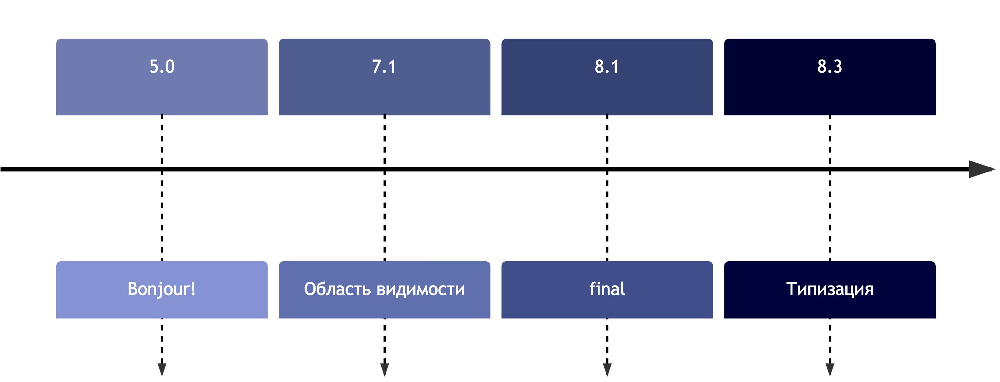

История констант классов
Переопределение констант до PHP 8.3
// PHP < 8.3
namespace Symfony\Component\HttpKernel;
interface HttpKernelInterface
{
public const MAIN_REQUEST = 1;
}
interface MessedUpKernel extends HttpKernelInterface
{
✅😢
public const MAIN_REQUEST = [];
}
Типизированные константы в PHP 8.3
// PHP >= 8.3
namespace Symfony\Component\HttpKernel;
interface HttpKernelInterface
{
public const int MAIN_REQUEST = 1;
}
interface MessedUpKernel extends HttpKernelInterface
{
❌😊
public const MAIN_REQUEST = [];
}
$reflClass = new ReflectionClass(HttpKernelInterface::class);
$reflClass->getReflectionConstant('MAIN_REQUEST')->getType();
Что можно получить динамически?
// переменные
$$variableName
// свойства
$object->$propertyName
MyClass::${$staticPropertyName}
// методы
$object->{$methodName}()
MyClass::{$staticMethodName}()
// классы в статических вызовах
$className::$staticProperty
$className::staticMethod()
// константы класса???
Динамический доступ
к константам класса в PHP 8.3
enum AwesomeLanguages
{
case PHP;
}
$constantName = 'PHP';
// PHP < 8.3
constant(AwesomeLanguages::class . "::{$constantName}");
// PHP >= 8.3
AwesomeLanguages::{$constantName};
Произвольные инициализаторы статических переменных
// PHP < 8.3
function x(): void
{
❌🤔
static $staticVariable = [new SplFileInfo(__FILE__)];
}
// PHP >= 8.3
function x(): void
{
✅😊
static $staticVariable = [new SplFileInfo(__FILE__)];
}
Переопределение методов до PHP 8.3
// PHP < 8.3
use PHPUnit\Framework\TestCase;
use Symfony\Component\Filesystem\Filesystem;
final class MyTest extends TestCase
{
✅😢
protected function taerDown(): void
{
(new Filesystem())->remove(__DIR__ . '/generated');
}
}
Атрибут #[Override] в PHP 8.3
// PHP >= 8.3
use PHPUnit\Framework\TestCase;
use Symfony\Component\Filesystem\Filesystem;
final class MyTest extends TestCase
{
#[Override] ❌😊
protected function taerDown(): void
{
(new Filesystem())->remove(__DIR__ . '/generated');
}
}
Глубокое клонирование
readonly свойств до PHP 8.3
// PHP < 8.3
final readonly class PhpRelease
{
public function __construct(
public string $version,
public string $manager,
public DateTime $date,
) {}
public function __clone(): void
{
❌
$this->date = clone $this->date;
}
}
Глубокое клонирование
readonly свойств в PHP 8.3
// PHP >= 8.3
final readonly class PhpRelease
{
public function __construct(
public string $version,
public string $manager,
public DateTime $date,
) {}
public function __clone(): void
{
✅
$this->date = clone $this->date;
}
}
Хотелка: клонирование
с частичным переопределением
// PHP 8.4 🙏
final readonly class PhpRelease
{
public function __construct(
public string $version,
public string $manager,
public DateTime $date,
) {}
public function withDate(DateTime $date): self
{
return clone $this with {
date: $date,
};
}
}
Валидация JSON до PHP 8.3
// PHP < 8.3
function json_validate(string $string): bool
{
json_decode($string);
return json_last_error() === JSON_ERROR_NONE;
}
// PHP < 8.3
function json_validate(string $string): bool
{
try {
json_decode($string, flags: JSON_THROW_ON_ERROR);
return true;
} catch (JsonException) {
return false;
}
}
Новая функция json_validate() в PHP 8.3
// PHP >= 8.3
json_validate('{"Hello": "World!"}'); // true
json_validate('{"Hello": }'); // false
Какой ключ будет у второго элемента?
$array = [];
$array[-5] = 'b';
$array[] = 'c';
var_dump($array);
// PHP < 8.3
array(2) {
[-5] => string(1) "b"
[0] => string(1) "c"
}
// PHP >= 8.3
array(2) {
[-5] => string(1) "b"
[-4] => string(1) "c"
}
Какие ключи будут в массиве?
$array = [];
$array[] = 'a';
$array[-5] = 'b';
$array[] = 'c';
$array[5] = 'd';
$array[] = 'e';
var_dump($array);
// PHP < 8.3 && >= 8.3
array(5) {
[0] => string(1) "a"
[-5] => string(1) "b"
[1] => string(1) "c"
[5] => string(1) "d"
[6] => string(1) "e"
}
Обновление Randomizer в PHP 8.3
$randomizer = new Random\Randomizer();
echo $randomizer->nextFloat(); // 0.57721566490153 🤔
echo $randomizer->getFloat(-M_E, M_PI); // 2.1484303282097
echo $dogName = $randomizer->getBytesFromString('My', 4); // MyMy
Что ещё почитать и посмотреть
Краткая инструкция по обновлению
composer why-not php '^8.3'
composer require php '^8.3'
Не забываем про Rector!
composer require --dev rector/rector
// rector.php
return static function (RectorConfig $rectorConfig): void {
$rectorConfig->parallel();
$rectorConfig->paths([
__DIR__ . '/src',
__DIR__ . '/tests',
]);
$rectorConfig->sets([
LevelSetList::UP_TO_PHP_83, ✅
]);
};
php vendor/bin/rector process
Прогресс или стагнация?
| 4.0.0 | 2000, May | Zend Engine |
| 4.1.0 | 2001, December | Производительность, улучшена подд. Windows |
| 4.2.0 | 2002, April | Суперглобальные переменные |
| 4.3.0 | 2002, December | CLI, Streams API |
| 4.4.0 | 2005, July | Maintenance release |
| 5.0.0 | 2004, July | Zend Engine 2, ООП, SimpleXML, SOAP, MySQLi, SQLite |
| 5.1.0 | 2005, November | Переписана обработка дат, производительность |
| 5.2.0 | 2006, November | Улучшена работа с памятью, JSON, ZIP, обработка загруженных файлов |
| 5.3.0 | 2009, June | Неймспейсы, LSB, замыкания, goto |
| 5.4.0 | 2012, February | Трейты, [], встроенный сервер |
| 5.5.0 | 2013, June | Генераторы, finally, ::class, OPcache |
| 5.6.0 | 2014, August | Оператор ..., распаковка массивов, импорт функций |
| 7.0.0 | 2015, December | Zend Engine 3, скалярные и возвр. типы, ??, <=>, анонимные классы |
| 7.1.0 | 2016, November | Nullable типы, видимость констант, void, iterable |
| 7.2.0 | 2017, November | Тип object, Sodium |
| 7.3.0 | 2018, December | Гибкий heredoc, конечная запятая в вызовах, улучшен GC |
| 7.4.0 | 2019, November | Типизация свойств, стрелочные ф-ции, ??=, preloading, FFI |
| 8.0.0 | 2020, November | Named аргументы, #[Attribute], promoted св-ва, |-типы, match, JIT |
| 8.1.0 | 2021, November | Enum, Fiber, (...), &-типы, never, readonly, new в инициализаторах |
| 8.2.0 | 2022, December | #[SensitiveParameter], null, false типы, readonly классы |
| 8.3.0 | 2023, November | Типы констант классов, #[Override], глубокое клонирование readonly |
Всех с релизом 🎉
@vudaltsov / Пых / PHP Point